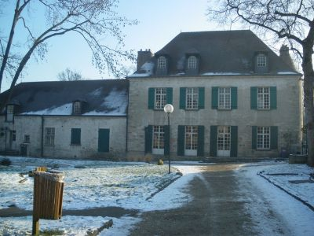
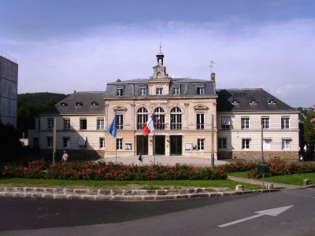

La commune est rattachée à l'académie de Versailles. Plusieurs structures accueillent les enfants et élèves de la ville, par ordre d'âges, le centre multi-accueil « Le Petit Prince », les crèches du Parc et de La Farandole, les écoles maternelles du Guichet, de Maillecourt, du Centre et de Mondétour, les écoles primaires du Centre, de Mondétour, du Guichet71, les collèges Alexander-Fleming et Alain-Fournier, le lycée général et technologique Blaise-Pascal72 qui possède une section de CPGE Mathématiques supérieures et Mathématiques spéciales parmi les meilleures de France73. S'ajoutent deux établissements privés catholiques, l'école maternelle et élémentaire Sainte-Suzanne74 et le Cours Secondaire d'Orsay, école maternelle, élémentaire, collège et lycée général75 qui est le second meilleur établissement du département selon le classement 2009 de L'Express76. Cet établissement met en oeuvre la pédagogie du Père Faure, inspirée de Maria Montessori dans les classes maternelles et élémentaires.
La ville d'Orsay, au coeur de la « Vallée de la Science » accueille en centre ville et dans le parc de deux cents hectares la présidence, les services généraux de l'Université Paris-Sud 11, et concentre une forte communauté scolaire (13 000 étudiants, 1 700 enseignants, 2 100 doctorants, 1 800 personnels administratifs et techniciens), à travers les cinq unités de formation et de recherche (UFR) (Sciences et STAPS), les trois instituts universitaires de technologie (IUT) (Chimie, Informatique et Mesures physiques), l'institut de formation d'ingénieurs de l'université Paris XI, les soixante laboratoires, les 500 000 mètres carrés de locaux et les résidences universitaires du centre régional des oeuvres universitaires et scolaires (Crous). Le campus d'Orsay et l'hôpital sont par ailleurs liés dans la recherche et la thérapie avec l'utilisation conjointe du troisième centre mondial de protonthérapie de l'Institut Curie depuis 199177. Le centre national de la recherche scientifique (CNRS) est aussi présent avec l'implantation de l'institut de physique nucléaire, le laboratoire de l'accélérateur linéaire, le centre de spectrométrie nucléaire et de spectrométrie de masse78. Enfin, l'hôpital d'Orsay est doté d'un Institut de formation en soins infirmiers sur le site du Grand-Mesnil79 à Bures-sur-Yvette.
|  | La ville d'Orsay La bouvêche sous la neige d'Orsay |
|  | Mairie d'Orsay Le soleil d'Orsay sur la mairie |